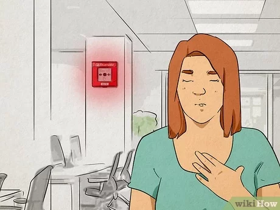
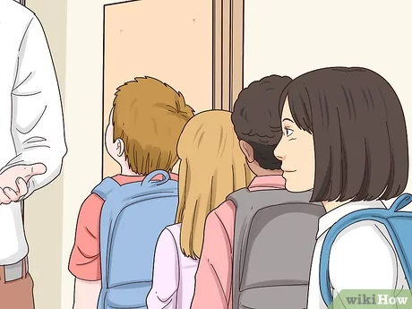
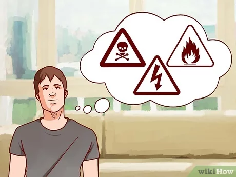

Step 1: Breathe Deeply
Practice deep breathing techniques to help calm your mind and reduce feelings of panic.
Take slow, deep breaths in through your nose and out through your mouth to help regulate your breathing and lower your heart rate.
Step 2:Focus on the Present
Concentrate on the immediate actions you need to take to ensure your safety and the safety of others.
Avoid dwelling on worst-case scenarios or hypothetical outcomes that may increase anxiety.
Step 3: Remain Positive
Maintain a positive mindset and reassure yourself that you are capable of handling the situation.
Focus on what you can control rather than what you cannot, and trust in your ability to adapt and respond effectively.
Step 4:Follow Emergency Procedures
Remember the emergency procedures and protocols you have learned through safety training and drills.
Follow the instructions provided by teachers, staff, or emergency responders, and take decisive action to evacuate or seek shelter as necessary.
Step 5: Use Visualization Techniques
Picture yourself successfully navigating the emergency situation and reaching safety.
Visualizing a positive outcome can help boost confidence and reduce feelings of fear or uncertainty.
Step 6: Stay Informed
Seek accurate information about the emergency situation from reliable sources such as teachers, school staff, or emergency responders.
Knowing what is happening and what steps are being taken to address the situation can help alleviate anxiety.
Step 7: Focus on Tasks
Keep your mind occupied by focusing on specific tasks or actions you can take to mitigate the emergency.
Whether it's helping others evacuate, using fire safety equipment, or providing assistance to those in need, having a sense of purpose can help maintain focus and calmness.
Step 8: Lean on Others for Support
Seek support from classmates, friends, or trusted adults during emergencies.
Share your concerns and feelings with others, and work together to support one another and navigate the situation as a team.
Step 9: Take Care of Yourself
Prioritize self-care during and after the emergency by attending to your physical and emotional needs.
Stay hydrated, eat nourishing foods, and engage in relaxation techniques or activities that help you decompress and unwind.
Step 10: Reflect and Learn
After the emergency has passed, take time to reflect on your experience and identify any lessons learned.
Consider what went well and what could be improved for future emergencies, and use this knowledge to better prepare yourself for similar situations in the future.